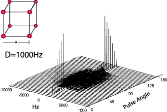

The dipolar instabilites
|
This is a replication of Jeener's simulation paper in PRL ("Dynamical effects of the dipolar field inhomogeneities in high-resolution NMR: Spectral clustering and instabilities", Jeener J, PHYSICAL REVIEW LETTERS, 82 (8): 1772-1775 FEB 22 1999).
Here he explores the dipolar instabilites as a function of pulse angle of a cube (8) of spins. For angles between 0..45 we see 'spectral clustering' where eventhough we have many dipolar frequencies present, the dynamics seem to indicate a single evolution frequency, however for angles 45..125 we see instabilites, from 125..180 we see the spectral clustering again. The simulation below shows this effect in the frequencies of the simulation for each pulse angle.

|
#-------------- The Input File ------------
#parameter file for 2 pulse sequences
dim 2,2,2
min -0.5,-0.5,-0.5
max 0.5, 0.5, 0.5
#fid pieces
npts 4096
tf 1
#the pulse bits
pulseangle 0
pulsephase 270
pulseamp 100000
pulsesteps 41
pulsestepsize 4.5
#basic spin parametesr
Bo 11
temperature 300
offset 0
T2 0
T1 0
spintype 1H
moles .2
#the extra interactions parts
dipole_str 50
#calculate lypuvnovs[1] or not[0]
lyps 0
lypout lyps
#file output names for the data
fidout data
#------------end InputFile ---------------
#include "blochlib.h"
//the required 2 namespaces
using namespace BlochLib;
using namespace std;
/*
loops through various pulse angles
on a dipole-dipole coupled system using the DimLessDipole object
offsets, and relaxation parmeters
*/
timer stopwatch;
void printTime(int nrounds=1){
std::cout <<std::endl<< "Time taken: " << (stopwatch()/nrounds) << " seconds";
}
void Info(std::string mess)
{
cout<<mess<<endl;
cout.flush();
}
int main(int argc,char* argv[])
{
std::string fn;
query_parameter(argc,argv,1, "Enter file to parse: ", fn);
Parameters pset(fn);
int nsteps=pset.getParamI("npts");
double tf=pset.getParamD("tf");
double offset=pset.getParamD("offset")*PI2;
double inBo=pset.getParamD("Bo");
double inTemp=pset.getParamD("temperature");
string spintype=pset.getParamS("spintype");
string detsp=spintype;
double t2s=pset.getParamD("T2");
double t1s=pset.getParamD("T1");
double moles=pset.getParamD("moles");
double dipstr=pset.getParamD("dipole_str")*PI2;
std::string fout=pset.getParamS("fidout");
coord<int> dims(pset.getParamCoordI("dim"));
coord<> mins(pset.getParamCoordD("min"));
coord<> maxs(pset.getParamCoordD("max"));
int cv=pset.getParamI("lyps");
// Bloch set up testing
typedef XYZfull TheShape;
typedef XYZshape<TheShape> TheGrid;
Info("Creating grid....");
Grid<UniformGrid> gg(mins, maxs, dims);
Info("Creating inital shape....");
TheShape tester;
Info("Creating total shape-grid....");
TheGrid jj( gg, tester);
typedef ListBlochParams< TheGrid,
BPoptions::Particle | BPoptions::HighField,
double > MyPars;
int nsp=jj.size();
Info("Creating entire spin parameter list for "+itost(nsp)+" spins....");
MyPars mypars(nsp, "1H", jj);
nsp=mypars.size();
Info("Setting spin parameter offsets....");
for(int j=0;j<nsp;j++){
mypars(j)=spintype;
mypars(j).moles(moles);
mypars(j).Bo(inBo);
mypars.temperature(inTemp);
}
mypars.calcTotalMo();
mypars.print(cout);
//time train testing
//Extra ineractions
typedef TanhScale Scaler;
typedef Interactions<Offset<>,
Relax<>,
DimLessDipole<TheGrid> > MyInteractions;
Info("Setting Interactions....");
Offset<> myOffs(mypars, offset);
Relax<> myRels(mypars, (!t2s)?0.0:1.0/t2s, (!t1s)?0.0:1.0/t1s);
DimLessDipole<TheGrid> DipDip(jj, dipstr);
MyInteractions MyInts(myOffs, myRels, DipDip);
//the pulse object
//The pulse list for a real pulse on protons..
double pang=pset.getParamD("pulseangle");
double pstep=pset.getParamD("pulsestepsize");
int numP=pset.getParamI("pulsesteps");
double amp=pset.getParamD("pulseamp");
double phase=pset.getParamD("pulsephase");
Info("Creating real pulse lists...");
// (spin, amplitude, phase, offset)
Pulse PP1(spintype, amp*PI2, phase*DEG2RAD);
PP1.print(cout);
//data FID
matrix FIDs(numP, nsteps);
for(int kk=0;kk<numP;++kk)
{
double tpulse=PP1.timeForAngle((pang+double(kk)*pstep)*Pi/180., spintype);
std::cout<<std::endl<<"On Pulse Angle: "
<<(pang+double(kk)*pstep)<<" degrees "<<std::endl;
Info("Initializing Time train for first Pulse....");
TimeTrain<UniformTimeEngine > P1(UniformTimeEngine(0., tpulse, 10,100));
Info("Initializing Time train for FID....");
TimeTrain<UniformTimeEngine > F1(UniformTimeEngine(tpulse, tpulse+tf, nsteps,20));
//typedefs for Bloch parameter sets
typedef Bloch< MyPars, Pulse, MyInteractions> PulseBloch;
typedef Bloch< MyPars, NoPulse, MyInteractions> NoPulseBloch;
//THis is the BLoch solve to perform a pulse
Info("Initializing total parameter list with a pulse....");
PulseBloch myparspulse(mypars, PP1, MyInts);
if(cv) myparspulse.calcVariational();
if(dipstr==0) DipDip.Off();
//This is the Bloch solver to Collect the FID (i.e. has no pusles...FASTER)
Info("Initializing total parameter list for FID collection....");
NoPulseBloch me;
me=(myparspulse);
Info("Integrating first Pulse....");
Vector<coord<> > tm=me.currentMag();
stopwatch.reset();
BlochSolver<PulseBloch > drivP(myparspulse, tm);
drivP.setCollectionPolicy(FinalPoint);
drivP.setWritePolicy(Hold);
if(!drivP.solve(P1)){
Info(" ERROR!!..could not integrate pulse P1....");
return -1;
}
BlochSolver<NoPulseBloch > driv(me, drivP.lastPoint());
Info("Integrating FID ....");
std::string lypname="lyps";
drivP.setCollectionPolicy(MagAndFID);
driv.setWritePolicy(Hold);
driv.setDetect(detsp);
if(cv) {
driv.setLyapunovPolicy(LypContinous);
driv.setLypDataFile(lypname);
}
if(driv.solve(F1)){
FIDs.putRow(kk, driv.FID());
}
}
matstream matout(fout);
matout.put("vdat", FIDs);
Vector<double> pangs(Spread<double>(pang, pang+(numP*pstep), pstep));
matout.put("pangs", pangs);
matout.close();
printTime();
}
|
|